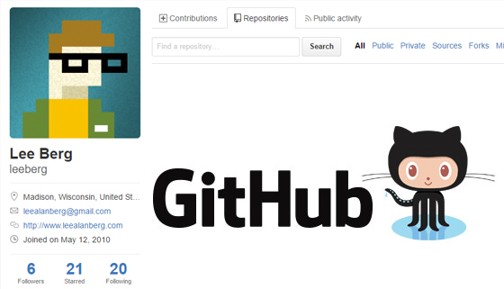

Dockerfile and Website Code
stored on a Github repository
The Docker File and Website "Source" is in a github repo. Any changes to this repo will trigger a rebuild and redeployment of the Docker Image and Web App!
